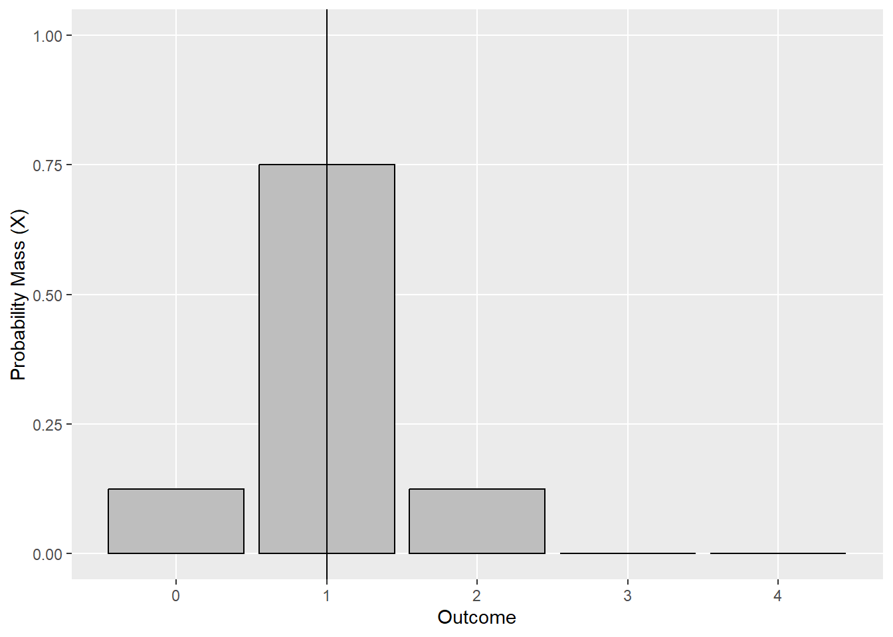
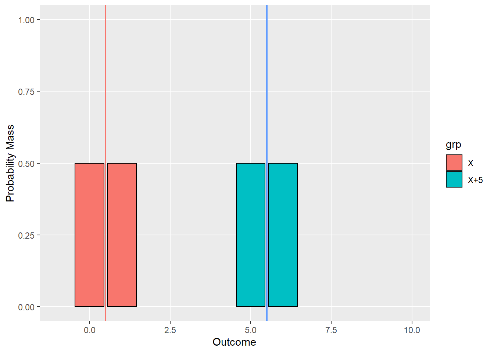

Chapter 2 Discrete Random Variables
As behavioral researchers, we are often studying a population of something. We might be interested in the percentage of individuals who like cats or the number of cats owned by the average individual. We might be interested in the average happiness level of a population of individuals and/or what makes them happy. The populations we study are often vaguely defined, e.g., as in the population of people who have received some experimental treatment. Here, we will begin to take these somewhat vague notions and make them concrete. It turns out that, when we are studying a population, we are really studying what statisticians call a random variable. In this chapter, we will pay particular attention to the discrete random variable.
2.1 What is a discrete random variable?
When we are in the process of conducting quantitative research (and statistics), we measure things in numbers. You may have noticed that our previous discussions of discrete sample spaces used non-numeric descriptions - e.g., \(S = \{H, T\}\) in the case of a coin flip. To make these sample spaces easier to work with, we will map our discrete outcomes to numbers. For example, if we were interested in a coin flip, we wouldn’t work directly with the values of \(H\) and \(T\). We would map each outcome to a value, e.g., heads to the value of 1 and tails to the value of 0. On any given coin flip, the value of our outcome would therefore be a number. A variable like this - one that assumes a number as a result of some random process (e.g., a flip, a random experiment, drawing out of a hat, rolling, randomly sampling, etc.) - is called a discrete random variable. In this section, we’ll provide some key definitions and notation for discrete random variables. This will make things more concrete and clear for you and make the interesting stuff more interesting.
The set of possible numbers a random variable can take is called the space of the random variable, and like the discrete sample space, these outcomes shall be either finite or countable. In general we refer to a random variable with a capital letter, typically \(X\), and a potential outcome of this random variable is referred to symbolically by a lower case letter, e.g., \(x\). For convenience, events in the space of a random variable are often referenced with a simplified set notation. Suppose we are describing the set of outcomes where our random variable \(X\) attains a particular value. We will write \(X = x\). For example, \(X = 1\) describes the outcomes in the space of \(X\) where our random variable attains a value of 1 - \(\{1\}\). We may also use an inequality - e.g., \(X \leq x\) - to reference a range of outcomes.
Because \(X\) attains a value from a random process, we’ll need a concrete way of describing it’s randomness. Recall in the last chapter, we discussed the probability set operator - \(P()\). This operator assigns the probability to an outcome - \(x\) - on the basis of a set of rules. The set of rules for the assignment of probability is called a probability distribution, and in the case of a discrete random variable this distribution is called a probability mass function (pmf) - \(p(x)\).
In practice, the set of rules (a.k.a, a probability mass function) is frequently described like this:
\[ P(X=x) = p(x) = \begin{cases} \frac{1}{2} & x = 1 \\ \frac{1}{2} & x = 0 \end{cases} \]
Note that \(P(X = x)\) and \(p(x)\) mean the same thing - hence the equal sign. After the large curly-brace, you will see a row for each outcome in the space of \(X\). In that row you will find the probability for that outcome. For example, \(P(X = 1) = p(1) = 1/2\). The pmf of \(X\) has two important properties. Specifically:
All the outcomes \(x\) in the space of \(X\) have a probability \(0 \leq p(x) \leq 1\). That is, all the outcomes in the space of \(X\) must have a probability from 0 to 1. The set of outcomes for which \(p(x) > 0\) is called the support of \(X\).
Given the space \(S\) of a random variable, \(P(S)\) = 1. In other words, if we are conducting a random experiment by drawing a value from the space of \(X\) (the set of all numeric outcomes for \(X\)), the probability that it lands in \(S\) is 1. This hearkens back to (1.10) in the previous section.
In plain language these two properties mean that we can define the pmf of a random variable by taking a total of one unit of probability and spreading it across a set of outcomes (the support of \(X\)). For example, you might give .25 probability to a value of 1, .5 to a value of 2, and .25 to a value of 3. In this case, each outcome would have a probability from 0 to 1, and these values would sum to 1.
In this chapter we will dig into discrete random variables in three steps:
We shall start by discussing the independence of random variables - with the goal of framing an intuition for the concept.
We will then turn our attention to things researchers might want to know about discrete random variables (and, as you will learn, random variables more generally).
And finally, we will discuss some random variables that are frequently found in behavioral research.
2.2 Independence of discrete random variables
The concept of independence is found frequently within the field of statistics. As you read on, you will find that it is essential to the derivation, understanding, and validity of some of the most fundamental things we shall learn in statistics. Therefore, it is nice to have a deeper understanding of it. The goal of this section is to frame an intuition of the independence of random variables. A deeper mathematical understanding shall be saved for your inevitable foray into mathematical statistics (no doubt after being inspired by this book to master the topic).
In the last chapter, we discussed the concept of the independence of events in a random experiment. We shall now discuss independence as it pertains to random variables. And, as you will see, it is very similar to the concept of independence for events. Suppose we have two random variables \(X_1\) and \(X_2\). Then we say the two variables are independent if
\[ P(X_1 = x_1 \cap X_2 = x_2) = P(X_1 = x_1)P(X_2 = x_2) \tag{2.1} \] In other words, if two random variables are independent, the probability of \(X_1 = x_1\) AND \(X_2 = x_2\) is equal to the product of their respective probabilities. We’ve already seen examples of this. Recall in example 1.20, we flipped three coins independently. If we mapped the outcomes of each coin to 1 and 0 for heads and tails, respectively, then the three resulting random variables are independent in the sense of (2.1).
With some algebraic manipulation of (2.1), we can see that the definition of independence for random variables is very similar to the definition of independence for events
\[ \frac{P(X_1 = x_1 \cap X_2 = x_2)}{P(X_2 = x_2)}=P(X_1 = x_1) \tag{2.2} \] And, perhaps not surprisingly (although it’s okay if you are surprised), if the two random variables are not independent then
\[ \frac{P(X_1 = x_1 \cap X_2 = x_2)}{P(X_2 = x_2)} = P(X_1 = x_1|X_2 = x_2) \neq P(X_1 = x_1) \] Put into the logic and hopefully more understandable intuition of last chapter, when two random variables are dependent, an event in the space of one variable changes the probability of an event in the space of another variable. This may seem a bit confusing at first, but you have already seen an example of the dependence of random variables. Recall example 1.22, when we looked at the sum of two dice. In this case, let’s call the sum of our two dice the random variable \(Z\) and represent the random variable of the first die by \(X\).
On the basis of (2.1), we shall be looking to determine if
\[ \frac{P(Z = z \cap X = x)}{P(X = x)} \neq P(Z = z) \]
The first thing we will need is \(P(Z = z)\). The space of \(Z\) are all the possible sums of our two dice - \(\{2,3,4,5,6,7,8\}\). Using the table we created in example 1.22, and the law of addition, we can determine a probability distribution for \(Z\) (try it yourself and see if you get the same thing as below)
\[ P(Z=z) = p(z) = \begin{cases} 1/16 & z = 2 \\ 2/16 & z = 3 \\ 3/16 & z = 4 \\ 4/16 & z = 5 \\ 3/16 & z = 6 \\ 2/16 & z = 7 \\ 1/16 & z = 8 \end{cases} \]
After our computation, we can see that the most probable value is 5. Because we haven’t had much experience with random variables, it is also important to point out that this distribution has all our previously discussed properties of a pmf. The probabilities of all the outcomes in the space of \(Z\) sum to 1, and they are constrained between 0 and 1.
Now that we have determined the probability mass function for \(Z\), we shall calculate \((P(Z = z|X = x))\). Hopefully the idea of independence/dependence of random variables will come into focus. Consider the case where \(X = 1\) (a 1 was rolled on the first die). What does the distribution of \(P(Z = z|X = 1)\) look like? To determine this we shall calculate the conditional probability of each Z - given our first dice roll is a 1. We did this back in example 1.22 for the specific value of \(Z = 3\), and now we shall do it here for every value (try it yourself)
\[ P(Z=z|X=1) = p(z|x=1) = \begin{cases} 1/4 & z = 2 \\ 1/4 & z = 3 \\ 1/4 & z = 4 \\ 1/4 & z = 5 \\ 0 & z = 6 \\ 0 & z = 7 \\ 0 & z = 8 \end{cases} \]
Do you see what happens with the event \(X = 1\)? The probability of \(Z\) changes with a roll of a 1 on the first die. For example, getting a \(Z = 2\) now has a whopping 1/4 chance, compared to a paltry 1/16 before the first dice was rolled. Moreover, the probability is now spread across only four values - \(\{2,3,4,5\}\). That is, the support of \(Z\) - given \(X = 1\) - is now 2, 3, 4, and 5. Thus, an intuitive definition of independence pivots on changes in the pmf of one random variable given the outcome of another variable.
This idea of independence shall be sufficient for our purposes, especially as we become more sophisticated in statistics and statistical analysis. As you will see, some of the most fundamental statistical concepts require an assumption of independence. In many cases, we shall assume that our random variables are independent to take advantage of some convenient mathematical properties associated with independence. We’ll see one of these convenient properties as soon as this chapter.
2.3 What do we want to know about discrete random variables?
A new statistics student will have made it to this point and reasonably wondered: what the heck is the point of all this back story? This skepticism is understandable, welcomed, and hopefully motivating. In this section, we shall discuss some things - as statisticians and researchers - that we might want to know about random variables. In doing so, hopefully the bigger picture comes into view. This, in my humble opinion, is where things really start to get interesting. I’m hoping you feel the same.
But first, let’s do a very very short review.
2.3.1 A very quick review: The summation operator
As statisticians we will need to sum a lot of things. It will therefore be useful to have an easy way to describe the operation of summation. To that end, suppose we are summing a set of numbers
\[ x_1 + x_2 + x_3 + x_4 + x_5 \,+\:... + x_n \]
The summation operator helps us write this operation more efficiently and with less ambiguity:
\[ \sum_{i=1}^{n} x_i \tag{2.3} \] The \(i\) at the bottom of the \(\sum{}^{}\) is referred to as the index. The index is how we refer to a single element in our set of \(x\)’s. For example, \(i=5\) refers to \(x_5\). The starting index is specified at the bottom of the summation operator to the right of the equal sign. In the equation above we are starting at the 1st element of our set of \(x\)’s. The value at the top of the summation operator is the index of the last element to be summed. Here we have written \(n\) which is the last element of our set of n \(x\)’s. In other words
\[ \sum_{i=1}^{n} x_i = x_1 + x_2 + x_3 + x_4 + x_5 + ... + x_n \] in terms of our example above. Additionally, it is important to note that n and i are not always used to indicate the last element and the index, respectively. Here we shall try to be consistent. Occasionally, to save a little time we shall write the summation operator like
\[ \sum_{x}^{} \]
This means - given all the \(x's\) in a set - sum all of them. Alright, now it’s time for the interesting stuff.
2.3.2 The expectation of a discrete random variable
The first thing that we shall want to know about a discrete random variable is its expectation. Given a random variable \(X\), we refer to its expectation as \(E(X)\). We shall also sometimes refer to it symbolically as \(\mu\). In other words
\[ E(X) = \mu \]
The expectation is commonly referred to as the mean of a random variable. The expectation of a discrete random variable \(X\) with a given pmf - \(p(x)\) is calculated
\[ E(X) = \sum_{i = 1}^{n} x_ip(x_i) \tag{2.4} \]
In words: For each \(x\) in the space of \(X\), multiply by its corresponding probability and sum the resulting values. An example, will help us understand the expectation a bit better.
Example 2.1 Suppose we have a random variable \(X\) with five outcomes in it’s space - \(\{1,2,3,4,5\}\). Further assume that the pmf of \(X\) assigns \(\frac{1}{5}\) probability to each outcome.
\[ P(X=x) = p(x) = \begin{cases} 1/5 & x_1 = 1 \\ 1/5 & x_2 = 2 \\ 1/5 & x_3 = 3 \\ 1/5 & x_4 = 4 \\ 1/5 & x_5 = 5 \end{cases} \] This is an example of a discrete uniform distribution. Given n outcomes, the discrete uniform distribution assigns \(1/n\) probability to each outcome on the space of the random variable.
Now let’s calculate the expectation of this random variable.
\[ \begin{align} E(X) = \sum_{i=1}^{5} x_ip(x_i) &= x_1p(x_1)+x_2p(x_2)+x_3p(x_3)+x_4p(x_4)+5p(x_5) \\ &= 1p(1)+2p(2)+3p(3)+4p(4)+5p(5) \\ &= (1)\frac{1}{5}+(2)\frac{1}{5}+(3)\frac{1}{5}+(4)\frac{1}{5}+(5)\frac{1}{5} \\ &= \frac{15}{5} = 3 \end{align} \] We’ve multiplied each value in the space of our random variable \(X\) by its probability and summed the values. The result of our computation is 3 - \(E(x) = 3\) - but what does that mean exactly? Well let’s explore the idea of expectation further by plotting the pmf of \(X\). In the figure below, the probability of each outcome is plotted. You can see the outcomes of the random variable labelled on the \(x\) axis, and probability of each is represented by the bar height. In this case, each outcome is equally likely, so the bars are of equal height.

Now suppose each of those bars has mass (a.k.a. probability mass), and further suppose we’ll place our wedge under the \(x\) axis such that the mass of the plot balances perfectly. Just by looking at the plot, if we put a wedge directly under the value of 3, there would be equivalent probability mass on either side, and the plot would balance perfectly. Notice that the value of 3 was the result of our expectation computation. \(E(X)\) can therefore be thought as the balancing point of the plot - the place that would perfectly balance the mass of probability for our random variable.
That said, we shall need to learn a little bit more about the expectation to proceed on our statistical adventure. First let’s observe that it is possible to take the expectation of some function of a random variable. In other words, we may apply some function to the outcomes in the space of \(X\) and then calculate an expectation. For example, we might have
\[ f(X) = 2X \] This function takes the outcomes in the space of \(X\) and multiplies each by 2. We shall calculate the expectation of this function of our random variable by
\[ E(f(X)) = \sum_{i = 1}^{n} f(x_i)p(x_i) \tag{2.5} \]
Let’s try it out in a couple examples.
Example 2.2 We will again use the distribution from example 2.1. Here we will keep it simple (and also demonstrate a property of multiplication you may recall from algebra). Suppose our function \(f(x)\) takes every value in the space of \(X\) and returns the value one. In other words,
\[ f(X) = 1 \] Let’s apply (2.5) to find the expectation of this function. First, let’s remind ourselves of the distribution of \(X\) and calculate \(f(x)\) for each outcome in it’s space
\[ p(x) = \begin{cases} 1/5 & x_1 = 1 & f(1) = 1 \\ 1/5 & x_2 = 2 & f(2) = 1 \\ 1/5 & x_3 = 3 & f(3) = 1 \\ 1/5 & x_4 = 4 & f(4) = 1 \\ 1/5 & x_5 = 5 & f(5) = 1 \end{cases} \] Now let’s calculate the expectation of \(f(X)\). Watch the underlined values for a little bit of algebra review.
\[ \begin{align} E(X) = \sum_{i=1}^{5} f(x_i)p(x_i) &= \underline{1}\:p(x_1)+\underline{1}\:p(x_2)+\underline{1}\:p(x_3)+\underline{1}\:p(x_4)+\underline{1}\:p(x_5) \\ &= \underline{1}\:[p(x_1) + p(x_2) + p(x_3) + p(x_4) + p(x_5)] \\ &= \underline{1}\:[\frac{1}{5} + \frac{1}{5} + \frac{1}{5} + \frac{1}{5} + \frac{1}{5}] \\ &= \underline{1}(1) = 1 \end{align} \] The second line of this calculation was made possible by the distributive property of multiplication. That made the computation easier because we note that the sum of probabilities over the space of \(X\) is equal to 1 (see the third line; and see the properties of a discrete random variable at the start of this chapter).
Example 2.3 Suppose our random variable \(X\) is again defined as in example 2.1. Now let’s use the function \(f(x)= 2X\). Then \[ p(x) = \begin{cases} 1/5 & x_1 = 1 & f(1) = 2(1) = 2 \\ 1/5 & x_2 = 2 & f(2) = 2(2) = 4 \\ 1/5 & x_3 = 3 & f(3) = 2(3) = 6 \\ 1/5 & x_4 = 4 & f(4) = 2(4) = 8 \\ 1/5 & x_5 = 5 & f(5) = 2(5) = 10 \end{cases} \]
\[ \begin{align} E(2X) = \sum_{i=1}^{5} f(x_i)p(x_i) &= 2p(x_1)+4p(x_2)+6p(x_3)+8p(x_4)+10p(x_5) \\ &= (2)\frac{1}{5} + (4)\frac{1}{5} + (6)\frac{1}{5} + (8)\frac{1}{5} + (10)\frac{1}{5} \\ &= \frac{30}{5} = 6 \end{align} \]
The astute observer might notice an interesting trend in the last two examples. In example 2.2, we saw that our function which converts the whole space of \(X\) into 1 had the expectation of 1. Indeed, looking back at the computation, we could perform that computation for any constant, e.g., if \(a\) is a constant, and \(f(X) = a\), then
\[ \begin{align} E(a) = \sum_{i=1}^{5} ap(x_i) &= \underline{a}\:p(x_1)+\underline{a}\:p(x_2)+\underline{a}\:p(x_3)+\underline{a}\:p(x_4)+\underline{a}\:p(x_5) \\ &= \underline{a}\:[p(x_1) + p(x_2) + p(x_3) + p(x_4) + p(x_5)] \\ &= \underline{a}\:[\frac{1}{5} + \frac{1}{5} + \frac{1}{5} + \frac{1}{5} + \frac{1}{5}] \\ &= \underline{a}(1) = a \end{align} \]
In other words, we would get the value of our constant every time. Similarly, in 2.3, recall that the original expectation of \(X\) was 3. Our function \(f(X) = 2X\) had the expectation of \(2\times3 = 6\). That is, we multiplied \(X\) by 2 and got back 2 times its expectation.
Our last two observations highlight a couple of properties of the expectation. We’ll list a few below. The first two (or three) you might have deduced yourself. The fourth is new.
Theorem 2.1 (Some Properties of the Expectation) If \(a\) and \(b\) are constants, then
\(E(b) = b\)
\(E(aX) = aE(X)\)
More generally, \(E(aX + b) = aE(X) + E(b)\)
If \(X_1\) and \(X_2\) are random variables, then
- \(E(aX_1 + bX_2)\) = \(aE(X_1) + bE(X_2)\)
These are called properties because they apply to any random variable - assuming that random variable has an expectation (a more advanced topic that we won’t discuss in much depth in this book). They allow us to perform computations with expectations without knowing much about the actual distribution of the random variable. And, they make computations easier. As you will see later, they will help us draw certain conclusions about the populations we study. For now, let’s see how they work in practice and look at a more thorough example for the fourth.
Example 2.4 Suppose we are given a random variable - \(Z\) - and \(E(Z) = 7\). What is the expectation of
\(4Z\)
\(Z + 10\)
\(1\)
\(4Z+10\)
We will approach each of these in turn.
- Property 2 tells us that \(E(aX) = aE(X)\), and in this case \(a = 4\)
\[ E(4Z) = 4E(Z) = 4(7) = 28 \]
Note that property 3 also applies here with \(b = 0\).
- Property 3 tells us that \(E(aX + b) = aE(X) + b\), so in this case we have \(a = 1\) and \(b = 10\)
\[ E(Z + 10) = (1)E(Z) + 10 = 7 + 10 = 17 \]
- The first property tells us that \(E(c) = c\), so
\[ E(1) = 1 \]
Note that property 3 also applies here with \(a = 0\) and \(b = 1\).
- Similar to number 2, property 3 applies with \(a = 4\) and \(b = 10\)
\[ E(4Z + 10) = E(4Z) + 10 = 4E(Z) + 10 = 28 + 10 = 38 \]
Do you see how that made things a bit easier? We didn’t have to go through the computation of the expectation of our function of \(Z\). I bet you can tell by now I like to avoid long computations! Now let’s turn our attention towards property 4.
Example 2.5 Suppose we flip two coins - where a flip of \(H\) yields a value of 1 and a flip of \(T\) yields a value of zero. Call these two random variables \(X_1\) and \(X_2\), respectively, and further assume that they are independent (recall what that means?). What is the expectation of their sum? To demonstrate why property four is so useful, we’ll do this the hard way and then the easy way.
First note that the pmf of \(X_1\) and \(X_2\) is
\[ p(x_1) = \begin{cases} 1/2 & x_1 = 1 \\ 1/2 & x_1 = 0 \\ \end{cases} \\ p(x_2) = \begin{cases} 1/2 & x_2 = 1 \\ 1/2 & x_2 = 0 \\ \end{cases} \] Without the use of property 4, these pmfs won’t suffice to calculate the expectation of \(X_1 + X_2\). We’ll have to figure out the pmf of the sum of the two random variables, a.k.a., \(Z = X_1 + X_2\). Note that there are four possible outcomes in the sample space of our two coin flips = \({HH, HT, TH, TT}\). One outcome in this sample space that would lead to a sum of two - \({HH}\). In this case, both values of \(X_1\) and \(X_2\) would be 1 so
\[ X_1 + X_2 = 1 + 1 = 2 \] Because our random variables are independent, we can find the probability of this outcome using the law of multiplication for independent events
\[ P(X_1 = 1 \cap X_2 = 1) = P(X_1 = 1)P(X_2 = 1) = (1/2)(1/2) = 1/4 \] We can do this calculation for each of the other outcomes in the sample space of our coin flips. The table below breaks down each. It is most easily read from left to right. Find the value of the first flip in the first column. For example, the big top row has a first flip of 1 (Heads). Next scan to the right to see outcome of the second flip, which can either be a 1 or a 0. Scan further to the right to see the sum and probability of the outcome. For example, if we flipped a 1 on the first coin, and then a zero on the second coin, the sum of the two would be 1, and the probability would be 1/4.
1st Flip | 2nd Flip | Sum (Z) | Probability |
|---|---|---|---|
1 | 1 | 2 | 1/4 |
0 | 1 | 1/4 | |
0 | 1 | 1 | 1/4 |
0 | 0 | 1/4 |
Looking over this table, we see that our new random variable \(Z\) has the space of \({0,1,2}\). There is only 1 way to get a 0 or 2, respectively, and each of those outcomes has a probability of \(1/4\). There are two ways to get a 1, so by the law of addition, this outcome in the space of \(Z\) has a probability of \(1/4 + 1/4 = 1/2\). In other words
\[ p(z) = \begin{cases} 1/4 & z = 0 \\ 1/2 & z = 1 \\ 1/4 & z = 2 \end{cases} \] Now, after that slog (you can imagine it being much worse), are in a position to calculate the expectation of \(Z = X_1 + X_2\)
\[ \begin{align} E(a) = \sum_{z}^{} zp(z) &= 0\:p(x_1)+1\:p(x_2)+2\:p(x_3) \\ &= 0\frac{1}{4} + 1\frac{1}{2} + 2\frac{1}{4} = \frac{2}{4} + \frac{2}{4} = 1 \\ \end{align} \]
The usefulness of the fourth property now comes into view. Observe that \(E(X_1) = E(X_2) = 1/2\) (calculate this on your own; you can do it!). So, by property 4
\[ E(X_1 + X_2) = E(X_1) + E(X_2) = 1/2 + 1/2 = 1 \] Easier!
We shall end this section with a word of caution. Some beginning statistics students may understandably read property 4 and think it applies to other arithmetic operations. For example they may think that \(E(XY) = E(X)E(Y)\). This is true in some circumstances but it is not true in general. The properties of the expectation apply specifically to the circumstances outlined by each property. You may get into trouble to go beyond that.
2.3.3 The variance of a discrete random variable
We have just dedicated a bit of time to the expectation of a random variable. Another important thing we will want to know as statisticians is the variance of a random variable. The variance of a random variable \(X\) is referred to as \(Var(X)\) or symbolically as \(\sigma^2\). The square root of the variance - \(\sigma\) - is called the standard deviation. In terms of discrete random variables, the variance is calculated
\[ Var(X) = E((X-\mu)^2) = \sum_{x}^{} (x - \mu)^2p(x) \tag{2.6} \]
It can be thought of as a measure of how “spread” out the probability mass function is for a given random variable (a.k.a. the dispersion). That is, it will tend to be higher for variables that have probability mass spread over larger ranges of values. In the case of the variance calculation described here, we are measuring dispersion by how far values are spread out from the expectation or mean of the random variable. There are indeed many ways you can measure the dispersion of a random variable. New students, for example, often wonder why we don’t just calculate \(E(X - \mu)\) instead of squaring the difference as in (2.6).
Example 2.6 Let’s do a quick calculation to convince ourselves why this isn’t a good idea. Such a calculation will have the added bonus of helping us review properties of the expectation. First notice that \(\mu\) is a constant, so
\[ E(X-\mu) = E(X) - E(\mu) = E(X) - \mu \]
Now observe that \(E(X) = \mu\), so
\[ E(X) - \mu = \mu - \mu = 0 \] \(E(X - \mu)\) is zero for every random variable (that has an expectation) which is not a very good measure of dispersion!
Example 2.7 With that minor point out of the way, let’s give the variance equation some run. Suppose our random variable \(X\) has the pmf
\[ p(x) = \begin{cases} 1/8 & x_1 = 0 \\ 3/4 & x_2 = 1 \\ 1/8 & x_3 = 2 \end{cases} \]
Reviewing the equation for the variance, it is apparent we shall first need to calculate \(\mu\) for \(X\) before we can do any calculation of the variance. Knowing what we know about the expected value and the balancing point of probability mass, I think we would be pretty safe to guess that the expectation of \(X\) is 1. Nevertheless, let’s calculate it really quick
\[ \begin{align} E(X) = \sum_{i=1}^{3} x_ip(x_i) &= 0\frac{1}{8}+ 1\frac{3}{4} + 2\frac{1}{8} \\ &= \frac{6}{8} + \frac{2}{8} = 1 \end{align} \]
Our intuition was indeed correct - \(E(X) = 1\). We shall now turn our attention to calculating the variance of \(X\)
\[ \begin{align} Var(X) = \sum_{i=1}^{3} (x_1-\mu)^2p(x_i) &= (x_1-\mu)^2p(x_1) + (x_2-\mu)^2p(x_2) + (x_3-\mu)^2p(x_3) \\ &= (0 - 1)^2\frac{1}{8} + (1-1)^2\frac{1}{8} + (2-1)^2\frac{1}{8} \\ &= (-1)^2\frac{1}{8} + 0 + 1^2\frac{1}{8} = \frac{1}{4} \end{align} \] Thus, \(Var(X) = 1/4\).
We should stop here and take a breath. In the last two sections, you’ve calculated your very first mean and variance of a random variable. Congratulations! These concepts may seem a little disconnected from our work as behavioral scientists, but they will make some wonderful things clear later on. I promise.
Now let’s get back to work. Just like the expectation, we can also calculate the variance of some function of \(X\). First calculate \(E(f(X))\), referred to here as \(\mu_f\), then
\[ Var(X) = E((f(X)-\mu_f)^2) = \sum_{x}^{} (f(x) - \mu_f)^2p(x) \tag{2.7} \]
To demonstrate how this equation works we’ll use the same pmf as example 2.7.
Suppose we want to find the variance of \(f(X) = 2X\). As with calculation of the expecation in the last section, let’s first multiply all the outcomes in the space of \(X\) by 2
\[ p(x) = \begin{cases} 1/8 & x_1 = 0 & f(x_1) = (2)0 = 0 \\ 3/4 & x_2 = 1 & f(x_2) = (2)1 = 2\\ 1/8 & x_3 = 2 & f(x_3) = (2)2 = 4 \end{cases} \] Next, in order to calculate \(Var(2X)\), we will first need \(E(2X)\). I’ll just go ahead and give you the fact that \(E(2X) = 2\), but you should calculate this for yourself as well (you have all the tools, skill, and excitement to do it!). Next we’ll apply our new equation
\[ \begin{align} Var(2X) = \sum_{i=1}^{3} (f(x_i)-\mu_f)^2p(x_i) &= (f(x_1)-\mu_f)^2p(x_1) + (f(x_2)-\mu_f)^2p(x_2) + (f(x_3)-\mu_f)^2p(x_3) \\ &= (0 - 2)^2\frac{1}{8} + (2-2)^2\frac{1}{8} + (4-2)^2\frac{1}{8} \\ &= (-2)^2\frac{1}{8} + 0 + 2^2\frac{1}{8} = 1 \end{align} \] Observe that the variance of our random variable \(2X\) is larger than \(X\). To understand why, let’s take a look at the probability mass functions of \(X\) and \(2X\).
The top plot below is the pmf of \(X\), with the vertical line representing \(E(X)\). The height of each bar represents the probability mass assigned to a particular value on the \(x\)-axis - in the space of \(X\). For example, \(1/8\) mass sits on top of the value 0. The bottom plot is the pmf of \(2X\) - as if we created a new random variable as \(x\) but with each of the outcomes multiplied by 2. That is, for example, instead of \(1/8\) probability sitting on top of 2, it now sits on top of 4. In this case, the vertical line represents \(E(2X)\). Note how the mass for \(2X\) now sits on the values of 0, 2, and 4 (the outcomes after we have applied \(f(x)\)). And, it’s pmf is spread out further around its expectation. It is dispersed more widely than the probability mass of \(X\). Indeed, this is an intuitive (although maybe not perfectly exact) way of thinking about variance: A random variable with a larger variance will tend to have it’s probability mass spread out more. Therefore, it is not surprising that the \(Var(X) < Var(2X)\). In fact, this is precisely the sort of behavior we would want out of a measure of variance!


We shall observe one more thing about our last two examples. In the first example we found \(Var(X) = 1/4\) and in the second example, we found \(Var(2X) = 1\). Indeed, you may not have noticed this quickly (I didn’t when I first learned this stuff), but
\[ \begin{align} Var(2X) &= 1 \\ &= 4\frac{1}{4} \\ &= 2^2\frac{1}{4} \\ &= 2^2Var(X) \end{align} \] Because \(Var(X) = 1/4\). I might have lost you there. In words, it looks like the variance of \(2X\) is simply \(2^2\) times the variance of \(X\). If we did this a few more times, you might begin to think that, given some value \(c\), the variance of \(cX\) is just \(c^2Var(X)\). Indeed this is true in general (for random variables that have a variance). Like the expectation, the variance also has some useful properties. They are listed below:
Theorem 2.1 (Some Properties of the Variance) If \(a\) and \(b\) are constants, then
\(Var(b) = 0\)
\(Var(aX) = a^2Var(X)\)
More generally, \(Var(aX + b) = a^2Var(X) + Var(b) = a^2Var(X) + 0\)
If \(X_1\) and \(X_2\) are random variables, and they are independent, then
- \(Var(aX_1 + bX_2)\) = \(a^2Var(X_1) + b^2Var(X_2)\)
Let’s do some examples to get a better grasp on these.
Example 2.8 Suppose we have a random variable \(X\) and we are seeking to determine the the variance of \(f(X) = b\) - e.g., \(Var(b)\). This function takes any value in the space of \(X\) and returns a constant \(b\). First take a moment to recall that \(E(f(X)) = E(b) = b\) (Property 1 of the expectation). So then our variance equation boils down to:
\[ Var(X) = E((f(X)-\mu_f)^2) = \sum_{x}^{} (b - b)^2p(x) = 0 \] Indeed, we could have just used property 1 of the variance and concluded the same thing - \(Var(b) = 0\). As an aside: within the field of statistics, random variables with zero variance are called degenerate. These variables return a constant every time because all their probability sits on exactly one value.
The next example will elucidate a bit of property 3. Specifically, we unpack why adding a constant value to a random variable doesn’t change it’s variance. That is to say, if we have \(a = 1\) and \(b=10\), then
\[ Var(aX+b) = (1)Var(X) + 0 = Var(X) \]
Example 2.9 Suppose we have a random variable \(X\) with \(E(X) = 1/2\), \(Var(X) = 1/4\), and pmf
\[ p(x) = \begin{cases} 1/2 & x = 0 \\ 1/2 & x = 1 \end{cases} \] Take a moment to calculate the expectation and variance of this random variable yourself. Now let’s say we would like to calculate \(Var(X + 5)\). Looking at property 3 of the expectation, we have \(a = 1\) and \(b = 5\). Therefore
\[ Var(X + 5) = Var(X) + 0 = 1/4 \] Why didn’t adding a constant to \(X\) change it’s variance? As is often the case, it’s easier to see why by visualizing some pmfs. In the plot below, you will see two pmfs. The first (blueish) is the pmf of \(X\), and the second (redish) is the pmf of \(X+5\) - as if we created a new random variable and pmf by adding 5 to each outcome of \(X\). The vertical lines represent \(E(X)\) and \(E(X+5)\) respectively. Do you see how the plot of \(X+5\) is simply the pmf of \(X\) shifted to the right? We can see the bars of \(X+%\) are still equivalently “spread” out but at a new location on the number line. Indeed, the values in the \(X+5\) pmf are just as close to their expectation compared to \(X\), so the variance calculation would not turn out differently (I invite you to convince yourself of this by using equation (2.7).

Let’s do a few more examples using properties 1 through 3, and then we’ll move on to the fourth.
Example 2.10 Given a random variable \(X\) with \(Var(X) = 10\) what is
\(Var(5X)\)
\(Var(3)\)
\(Var(2X + 7)\)
Let’s unpack each in turn.
- Property 2 says that \(Var(aX) = a^2Var(X)\), so
\[ Var(5X) = 25Var(X) = 250 \]
Property 1 says that \(Var(b) = 0\), so this one is \(0\)
Property 3 says that \(Var(aX + b) = a^2Var(X) + 0\), so
\[ Var(2X + 7) = 4Var(X) + 0 = \]
The last three examples should give you a good sense of how to use properties 1 through 3 of the variance. They can each be useful and save us the rigmarole of the variance calculation. We now turn our attention to the fourth property. Notice how this property is very similar to the fourth property of the expectation - except there is an additional caveat. Our random variables must be independent.
Example 2.11 We will again work with the random variables in example 2.5. Recall that \(Z\) was the sum of two random variables \(X_1\) and \(X_2\) - each having an expectation of 1/2. In this example, we determined the distribution and expectation of \(Z\). From property 4 of the expectation we found that \(E(Z) = E(X_1 + X_2) = 1/2 + 1/2 = 1\). Now let’s determine the variance of this random variable.
Recall that the variables \(X_1\) and \(X_2\) are independent. This means that property 4 applies, and we shall use it. First let’s calculate the variance of \(X_1\) (which will also be the variance of \(X_2\))
\[ \begin{align} Var(X_1) = \sum_{x}^{} &= (0-\frac{1}{2})^2p(0) + (1-\frac{1}{2})^2p(x_2) \\ &= 0 + \frac{1}{4} \\ &= \frac{1}{4} \end{align} \] And, therefore, by property 4, the variance of \(Z\) is
\[ Var(Z) = Var(X_1 + X_2) = \frac{1}{4} + \frac{1}{4} = \frac{1}{2} \] Now consider the circumstance where we multiply \(X_1\) by four before adding it to \(X_2\). Then the variance of the sum of \(4X_1\) and \(X_2\) would be
\[ Var(4X_1 + X_2) = 16Var(X_1) + Var(X_2) = (16) \frac{1}{4} + 1/4 = \frac{17}{4} \] by property 4. And now you see the usefulness of the fourth property of the variance. We only needed the expectations and variances of our simpler variables \(X_1\) and \(X_2\) to do more complicated computations. In this case, we didn’t need to know the distribution or expectation of \(4X_1 + X_2\) (although I bet you could figure it out by following the procedure of example 2.5). We only need to know that they are independent. As you will see, many of the statistical procedures we will learn will assume independence to take advantage of this particular property of the variance.
We close out this section with a final word of caution and a reference to the bigger picture. First the word of caution: The properties of the variance must be applied exactly how they are described. For example, without more information (which we will not persue here) it would be difficult to tell what \(Var(X_1X_2)\) would be.
Now the bigger picture: We have spent the last two sections of this chapter talking about the expectation and variance of random variables. In our research practice, we typically do not know the expectation and variance of the population (random variable) we are trying to study. Statistics is the mathematical science of figuring these things out. Over the years some very smart people have invented some wonderful ways to study random variables. Understanding the expectation and variance shall help us develop a deeper understanding how to study random variables. We’re on the journey to learn the beginnings of this wonderful field.
2.4 Some common discrete distributions
As we have seen from the previous sections, there are an infinitude of probability mass functions/discrete distributions. Nevertheless, as behavioral researchers we tend to encounter certain types of random variables and discrete distributions more frequently. In this section, we shall discuss three commonly occurring distributions of discrete random variables:
The Bernoulli distribution,
The binomial distribution,
and the Poisson distribution.
As you will see, these distributions are closely related.
2.4.1 The Bernoulli distribution
A random variable - \(X\) - with a Bernoulli distribution (here referred to as a Bernoulli random variable) can take two outcomes - 1 or 0 - where 1 is typically mapped to a “success” or outcome of interest. We’ve already seen an example of a Bernoulli random variable - a coin flip with pmf
\[ p(x) = \begin{cases} 1/2 & x = 1 \\ 1/2 & x = 0 \end{cases} \]
In general, however, the probability of a success does not have to be 1/2. We can choose any probability \(p\) with \(0 \leq p \leq 1\), such that the pmf of our random variable \(X\) is
\[ p(x) = \begin{cases} p & x = 1 \\ 1-p & x = 0 \end{cases} \tag{2.8} \]
That is to say, we assign \(p\) as the probability of success and then assign the remaining probability \(1-p\) to a non-success. Notice how the probabilities add to 1, e.g.,
\[ p + (1-p) = 1 \]
Here we refer to \(p\) as a parameter of the pmf of \(X\). A parameter is a value that is necessary to fully specify a distribution and determine a probability from it. In this case, we need the value of \(p\) in order to determine the probability of a success or non-success, respectively. For example, if \(p = 1/4\), then the pmf of the random variable \(X\) is
\[ p(x) = \begin{cases} 1/4 & x = 1 \\ 1-1/4 = 3/4 & x = 0 \end{cases} \] As we have seen from the previous two sections, it helps to have quick ways of calculating expectations and variances. For each of the common distributions, we will therefore present or derive equations for each. As you know, in order to get the variance, we first need to expectation. With regards to a Bernoulli random variable (\(X\)) with some parameter \(p\), the expectation is
\[ E(X) = \sum_{x} xp(x) = 1(p) + 0(1-p) = p \tag{2.9} \] In words, the expectation of a Bernoulli random variable is the probability of a success. As you recall from our previous discussion, now that we have the expectation of our random variable, we have enough information to calculate the variance. This is a little more complicated, although certainly within our reach. I’ll try my best to breakdown the steps. Recall the definition of the Bernoulli distribution:
\[ p(x) = \begin{cases} p & x = 1 \\ 1-p & x = 0 \end{cases} \]
Now let’s calculate the variance with this as reference.
\[ \begin{align} Var(X) = \sum_{x} (x - \mu)^2p(x) &= (x-p)^2p(x) \\ &= (1-p)^2p + (0-p)^2(1-p) \\ &= (1-p)^2p + p^2(1-p) \\ &= p(1-p)^2 + p^2(1-p) \\ &= p(1-p)(1-p) + p(p)(1-p) \end{align} \] Note that we just rearranged terms from the 3rd to 4th line. On the 5th line we wrote out the squares as multiplications. Now, we’ll stop here and point something out. This equation has two terms - one before the + and one after. Each of these terms has a common factor of \(p(1-p)\). We’re going to use the magic of the distributive property. Watch the underlines below.
\[ \begin{align} &= \underline{p(1-p)}(1-p) + p\underline{(p)(1-p)} \\ &= \underline{p(1-p)}[(1-p) + p] \\ &= p(1-p)[1-p+p] \\ &= p(1-p)[1] \\ &= p(1-p) \end{align} \tag{2.10} \] The variance of a Bernoulli random variable is therefore \(p(1-p)\). These equations help us quickly calculate important aspects of Bernoulli distributions, but they will also help us derive the expectation and variance of our next important distribution. An example will kick us off.
Example 2.12 Suppose an individual who really likes lottery tickets has a .01 chance of winning any money from their favorite scratcher. They purchase 100 lottery tickets. What is the average number of winning lottery tickets we would expect from such a large purchase?
First, observe that we are talking about a Bernoulli random variable (100 of them in fact) with \(p = 0.01\). Our pmf is therefore
\[ p(x) = \begin{cases} .01 & x = 1 \\ .99 & x = 0 \end{cases} \] From our derivations above, we also know that the expectation of our random variable is .01. We also know that (for the sake of completeness) its variance is
\[ p(1-p) = .01(1-.01) = 0.0099 \] We are, however, asked to determine the expectation of 100 scratchers. You can think about each lottery ticket as a single random variable. That is we have a set of 100 random variables
\[ \{X_1, X_2, X_3,...,X_{100}\} \] The key observation here is that their sum represents the number of successful lottery tickets. That is, if we added them all up, e.g.,
\[ \sum_{i-1}^{100} X_i \] then the sum of their outcomes would be the number of winning lotto tickets. For example, if we had 3 winners, we would get three ones and 97 zeros. The total sum would be 3. Indeed, we know how to calculate the expectation of a sum of random variables thanks to the properties of the expectation.
\[ \begin{align} E(\sum_{i=1}^{100} X_i) &= E(X_1) + E(X_2) + E(X_3) + ... + E(X_{100}) \\ &= p + p + p + ... + p \\ &= 100p \\ &= 100(.01) = 1 \\ \end{align} \] The lotto ticket enthusiast shall expect to have 1 winning ticket on average. That’s not a stupendously lucrative hobby, but who says hobbies have to be profitable.
To close out this example, let’s think about \(\sum_{i=1}^{100} X_i\). The sum of these random variables is itself a random variable. Call it \(Z\). Note that we have already looked at similar variables as in examples 2.5 and 1.22. Although, we were able to determine the expectation of this variable \(Z\) using our knowledge of the expectation and Bernoulli random variables, we do not know its pmf.
Well, you’re in for a treat! We shall next discuss the pmf of this random variable (and others like it). Fair warning: This is one of my favorite pmfs of all time.
2.4.2 The binomial distribution
The binomial distribution is the pmf of the sum of \(n\) Bernoulli random variables. In our last example, we saw an example of a binomial distribution with 100 Bernoulli random variables, and we were already equipped to calculate its expectation (and variance if independence is assumed). Instead of throwing the whole distribution at you at once, we’ll work up from a single example.
Example 2.13 Suppose we have three independent Bernoulli random variables - \(X_1\), \(X_2\), and \(X_3\) - with with \(p = 1/3\), and \(1-p = 1-1/3 = 2/3\). We would like to know the probability that they sum to the value of 1. In order to get a value of 1 from our sum, we will need exactly 1 success and 2 non-successes at the resolution of our random process (e.g. flipping three coins and hoping for heads). There are three such combinations of successes and non-successes that will yield this result. I’ve listed each in a set below. Note that the order of the digits in each outcome corresponds to variables 1, 2, and 3, respectively.
\[ \{1\,0\,0, 0\,1\,0, 0\,0\,1\} \] Each of these outcomes in our three-variable sample space would result in a value of 1. For example, with regards to the first element, we have \(1 + 0 + 0 = 1\). The event \(Y = \{1\,0\,0, 0\,1\,0, 0\,0\,1\}\) therefore fully specifies the scenario where our Bernoulli random variables sum to 1. We have learned all the tools to calculate the probability of this event. We will first need the probability of each of the outcomes in the set \(Y\). Our random variables are independent, so we can multiply \(P(X_1 = x_1)\), \(P(X_2 = x_2)\), and \(P(X_3 = x_3)\) to determine the probability of each of the outcomes in \(Y\).
\[ P(\{1\,0\,0\})=(P(X_1 = 1)P(X_2 = 0)P(X_3 = 0) = 1/3 \times 2/3 \times 2/3 = 4/27 \\ P(\{0\,1\,0\})=(P(X_1 = 0)P(X_2 = 1)P(X_3 = 0) = 2/3 \times 1/3 \times 2/3 = 4/27 \\ P(\{0\,0\,1\})=(P(X_1 = 0)P(X_2 = 0)P(X_3 = 1) = 2/3 \times 2/3 \times 1/3 = 4/27 \] Therefore each has the exact same probability, and by the law of addition, \(P(Y) = 4/27 + 4/27 + 4/27 = 12/27 = 4/9\). Importantly, note how each of the combinations has exactly the same probability. This is because each has the same number of successes and the same number of non-successes. A little algebra helps to see this. Let’s take a closer look at the combination - \(\{0\,1\,0\}\).
\[ \begin{align} P(\{1\,0\,0\})=(P(X_1 = 0)P(X_2 = 1)P(X_3 = 0) &= (1-p)p(1-p) \\ &= p(1-p)(1-p) \\ &= p^1(1-p)^2 \\ &= (1/3)^1(1-1/3)^2 \end{align} \] Note that the second line from the top is just a rearrangement of factors thanks to the commutative property of multiplication. Looking carefully, we see that we have \(p^1\) because we have 1 success, and we have \((1-p)^2\) because we have two non-successes. You could rearrange the factors of the other combinations and get the same result. That is to say, each outcome has the same probability because they have the same number of successes and non-successes.
There are a couple of important things to note from the last example. If we are looking to determine the pmf of a random variable \(Z\) - where \(Z\) is the sum of \(n\) Bernoulli random variables (e.g., \(Z = X_1 + X_2 +...+X_n\)) - we will need two pieces of information. The first thing we will need is the number of ways we can get a given value of \(Z\). In the example above, we found that there were three different ways to get a value of 1. We enumerated them by hand, but you can see that this process would be incredibly cumbersome for large \(n\)’s. The second thing we shall need is the probability of single outcome where \(Z=z\). We only need the probability of 1, because each possible combination will have the same number of successes and non-success, and therefore, the same probability. In our last example, we had three possible combinations - each with a probability of 4/27, and observe
\[ \frac{4}{27} + \frac{4}{27} + \frac{4}{27} = 3\times\frac{4}{27} \]
as we calculated before. We shall discuss each of these - the number and the probability - in turn.
First we will discuss the number of combinations, and to do this we will need a little bit of review. Specifically, we will need to know how to calculate a factorial. The factorial looks a little intimidating, but it’s not too hard to unpack. Given some integer \(n\), a factorial is defined as
\[ n! = n(n-1)(n-2)...(1) \] so for example, if \(n = 3\) then,
\[ 3! = 3\cdot2\cdot1 = 6 \] We multiply \(3\) by all the integers less than \(3\) - all the way down to 1. Now you may recall (or be wondering) what we do with \(0!\). A zero factorial is defined to be 1, so
\[ 0! = 1 \]
With that brief review out of the way, we now return to calculating the number of combinations. Supposing we have \(n\) Bernoulli random variables, and \(z\) successes, then the number of combinations resulting in the value \(z\) is calculated
\[ [Number\: of \: Combinations]=\frac{n!}{z!(n-z)!} \]
This equation is often symbolically referenced as \({n \choose z}\). That is
\[ {n \choose z} = \frac{n!}{z!(n-z)!} \tag{2.11} \]
Example 2.14 Returning to our previous example with \(n = 3\), we can now quickly calculate the number of ways to get a sum of 1.
\[ \begin{align} {3 \choose 1} &= \frac{3!}{1!(3-1)!} \\ &= \frac{3 \cdot 2 \cdot 1}{1 \cdot 2 \cdot 1} \end{align} \]
Then if we cancel out common multiples in the numerator and denominator, we get
\[ \frac{3 \cdot 2 \cdot 1}{1 \cdot 2 \cdot 1} = \frac{3}{1} = 3 \]
which is exactly what we were looking for.
Now that we know how to calculate the number of combinations necessary for \(z\) successes, we shall turn our attention to the probability of a single combination. Looking back at example 2.13, a single outcome had one success and two non-successes. The probability of a single was therefore
\[ p(1-p)(1-p) = p(1-p)^2 \]
Generally speaking, we can calculate the probability of a single combination of \(z\) successes and \(n-z\) non-successes by
\[ p^z(1-p)^{n-z} \tag{2.12} \]
In our example, we had \(z = 1\) and \(n-z = 3-1 = 2\), so we had \(p(1-p)^2\) for each of the outcomes. Indeed, this agrees with our algebraic manipulation at the end of example 2.13.
Now we are ready to put it all together. The pmf of the sum of \(n\) Bernoulli random variables, each with probability of success \(p\), is
\[ p(x) = \begin{cases} {n \choose z} p^z(1-p)^{n-z} & z = 0,1,...,n \\ 0 & Everywhere\: else \end{cases} \tag{2.13} \] The \({n \choose z}\) gives us the number of ways to get a value of z, and the \(p^z(1-p)^{n-z}\) gives us the probability for a single way. If we plugged our first example into this equation, then we get
\[ 3 \times \frac{4}{27} = \frac{4}{9} \] as we observed before when we calculated the probability by hand. The binomial distribution is often referenced as \(B(n,p)\) - where \(n\) and \(p\) are parameters. To indicate the distribution of \(X\) we would write \(X \sim B(n,p)\), meaning \(X\) is a random variable with a binomial distribution, a.k.a., a binomial random variable. Not all distributions have a special symbol, but when they do we will also sometimes use the shorthand above.
We now turn our attention to the expectation and variance of a binomial random variable. Our random variable - call it \(Z\) - is just the sum of \(n\) indepndent Bernoulli random variables with parameter \(p\), so the expectation is calculated as
\[ E(Z) = E(\sum_{i=1}^{n}X_i) \] And each of the \(X_i\)’s has \(E(X_i) = p\), so we would sum \(p\) a total of \(n\) times. That is,
\[ E(Z) = E(\sum_{i=1}^{n}X_i) = \sum_{i=1}^{n}p = np \tag{2.14} \]
where \(\sum_{i=1}^{n}p\) means that for each \(X_i\) we add another \(p\), and as such, \(E(X) = np\). The logic behind the variance is very similar. Our Bernoulli random variables are independent, so we can apply property 4 of the variance. Recall that the variance of a Bernoulli random variable is \(p(1-p)\), so
\[ Var(Z) = Var(\sum_{i=1}^{n}X_i) = \sum_{i=1}^{n}p(1-p) = np(1-p) \tag{2.15} \]
For each random variable, we add a \(p(1-p)\), so \(Var(Z) = np(1-p)\). Let’s close this section out with a few examples of the binomial distribution.
Example 2.15 Suppose we are flipping 4 fair coins - each with \(p=1/2\) probability of flipping heads. Further suppose that we assign \(H\) the value of 1 and \(T\) the value of zero, and sum the flipped outcomes. Our new random variable has a space of \(\{0,1,2,3,4\}\). Let’s call this new (binomial) random variable \(Z\). In this case, what is the probability of flipping zero heads - \(P(Z = 0)\)? What is the probability of flipping at least 1 head - \(P(Z \geq 1)\)? What are the expectation and variance of this new random variable \(Z\).
For the first part of the question, we have \(n = 4\), \(p = 1/2\), and \(z = 0\), so let’s plug these into the pmf for a binomial distribution.
\[ \begin{align} P(Z = 0) &= {4 \choose 0} 1/2^0(1-1/2)^{4-0} \\ &= \frac{4!}{0!(4-0)!}(1/2)^0(1-1/2)^{4-0} \\ &= \frac{4 \cdot 3 \cdot 2 \cdot 1}{1 \cdot 4 \cdot 3 \cdot 2 \cdot 1}(1/2)^0(1-1/2)^{4-0} \end{align} \]
Notice how the factors are the same for the top and bottom of \(\frac{4 \cdot 3 \cdot 2 \cdot 1}{1 \cdot 4 \cdot 3 \cdot 2 \cdot 1}\), so we can cancel out all the common factors and get 1. Then
\[ \begin{align} &= (1)(1/2)^0(1-1/2)^{4-0} \\ &= (1)(1/2)^0(1/2)^{4} \\ &= (1/2)^{4} = 1/16 \end{align} \] where the last step follows because a number raised to the 0th power is 1. Therefore, \(P(Z = 0) = 1/16\). The second part follows from this first part of the question. Let’s call the space of our random variable \(S = \{0,1,2,3,4\}\). Note that the set \(\{Z \geq 1\} = \{1,2,3,4\}\) is the complement of \(\{Z = 0\}\). Therefore, we can use equation (1.11).
\[ P(Z \geq 1) = 1 - P(Z = 0) = 1 - 1/16 = 15/16 \] Finally the expectation and variance of this random variable is
\[ E(Z) = np = 4(1/2) = 2 Var(Z) = np(1-p) = 4(1/2)(1-1/2) = 1 \] respectively.
Example 2.16 Suppose there are 30 students in a particularly difficult course at College of Learning (a preeminent college). Over many many years, researchers at the college determined that the probability of passing this very difficult course is about .25. What is the probability of 0 students passing the course, and what is the probability of at least 1 student passing the course? What is the expectation of the number of students passing?
Here we have \(p = .25\) and \(n=30\). Our binomial distribution therefore looks like this:
\[ p(x) = \begin{cases} {30 \choose z} .25^z(1-.25)^{30-z} & z = 0,1,...,30 \\ 0 & Everywhere\: else \end{cases} \tag{2.13} \]
With regards to the first part of the question, we have \(z = 0\), and the probability is calculated
\[ \begin{align} P(Z = 0) &= {30 \choose 0} .25^0(1-.25)^{30-0} \\ &=\frac{30!}{0!(30-0)!}(.75)^{30} \\ &=\frac{30!}{30!}(.75)^{30} = .00019 \end{align} \] \(P(Z=0) = 0.00019\) (after some rounding), and we can proceed with the second part as we did in the last example.
\[ P(Z \geq 1) = 1 - P(Z=0) = 1 - 0.00019 = 0.99981 \] Finally, the expectation of our random variable is \(E(Z) = .25(30) = 7.5\).
Example 2.17 We’ll close out the section with one final example that is a little less straight forward (but very interesting). Suppose a casino has a lottery with a \(p = 1/100000\) chance to win. Multiple winners are possible, such that one person winning does not affect the odds of another person winning. There are 10000 gamblers who play this lottery every time. If these gamblers return to the casino every week for 10 years (520 weeks), what is the probability that at least one gambler wins this lottery twice during the period?
We will first need the probability that a single gambler wins the lottery twice. That is, if we call the number of wins \(Z\) then we will need \(P(Z \geq 2)\). To do this, we will calculate \(P(Z=0)\) and \(P(Z=1)\). Here we have \(n = 520\) - corresponding to 520 weekly attempts over 10 years - and \(p = 1/100000\), so
\[ P(Z=0) = p(0) = {520 \choose 0} \left(\frac{1}{100000}\right)^0\left(1-\frac{1}{100000}\right)^{520-0} \approx 0.99481\\ P(Z=1) = p(1) = {520 \choose 1} \left(\frac{1}{100000}\right)^1\left(1-\frac{1}{100000}\right)^{520-1} \approx 0.00517 \] Note that I’ve used a computer for these calculations, and if you wish to work through the problem yourself, I suggest you use one as well. In order to calculate \(P(Z \geq 2)\), we proceed as in the previous examples.
\[ P(Z \geq 2) = 1 - (P(Z = 0) + P(Z=1)) = 1 - .99998 = 0.00002 \] Now many people might stop there, and conclude that the probability we seek is \(0.00002\). However, we aren’t looking for the probability that a single person wins the casino lottery, we are looking for the probability that one person out of the 10000 weekly gamblers wins twice. Now we have another binomial distribution, this time each gambler is a Bernoulli random variable - each with \(p = 0.00002\) of winning the lottery twice.
First let’s calculate the probability that no gamblers win twice. With \(p = 0.00002\) and \(n = 10000\),
\[ p(0) = {10000 \choose 0} (0.00002)^0(1-0.00002)^{10000-0} \approx 0.81873 \] Therefore, the probability that 1 or more gamblers wins this lottery twice is
\[ 1 - 0.81873 = 0.18127 \] Indeed, that is a low probability, but it is much much higher than the probability for a single person. Sometimes during the chaotic news cycle, we catch the story of an individual who won some lottery twice. Our minds jump directly to the probability of an individual winning the lottery. It’s a perfectly human thing to do, but the probability is indeed much higher when considering the entire population of lottery players. Isn’t that interesting!? And we’ve learned it all thanks to the binomial distribution.
2.4.3 The poisson distribution
The poisson distribution is the pmf of a random variable representing the count of something in a fixed time period - e.g. the number of people entering a building in an hour, the number of requests received in a week, etc. Here we shall refer to a random variable with a poisson distribution as a poisson random variable. As you will see, the poisson distribution is strongly related to the binomial distribution. In fact, it’s derived from it. We will unpack the intuition here.
Suppose we were interested in counting the number of cars that pass through an intersection during the same 1 hour period every Monday. Let’s further suppose that we aren’t particularly good at counting, so instead we divide the time period into 10 equal intervals. If a car appears during an interval we assign a 1 to the interval and wait for the next interval to start. It doesn’t matter how many cars appear in a given interval. We simply assign the interval a 1 if any number of cars appear. Otherwise, we assign a zero. At the end we sum up all our 1’s and 0’s across the intervals to get a count of cars.
If the probability (call it \(p_1\)) of a car appearing in an interval is constant across the intervals, and the occurrence of a car doesn’t change the likelihood another car will appear later (the car appearance events are independent), then you can think of our counting method as a binomial distribution. In this case, we would have a random variable with a \(B(10,p)\) distribution because we would be summing 10 Bernoulli random variables. However, if you are tracking to this point, you will probably have noticed that this is not a very good way to count. You would end up counting a maximum of 10 cars, and if more than one car appeared during an interval 10 could certainly be an underestimate.
We could make our counting a little more accurate if we divided the time period into more intervals - say to 20. In this case the intervals would be shortened, so the probability that a car appeared in a given interval would get smaller. That is, we now have a random variable with a \(B(20, p_2)\) where \(p_2 < p_1\). This is still not a very good way to count, but it is a little bit better. Because our interval is smaller, the chance that two cars appear during the same interval is reduced, and furthermore, we can now get a maximum of 20 cars if a car appears in each interval.
Suppose we continue with this logic of splitting the time period into smaller and smaller intervals - e.g. \(B(30, p_3)\), \(B(100, p_4)\), \(B(1000, p_5)\) with \(p_5 < p_4 < p_3 < p_2 < p_1\), and so on. Eventually, we would make the intervals so small that the occurrence of two cars in the same interval would be virtually impossible. Our method would then be equivalent to a count of cars over the time period.
This is the fundamental logic behind the poisson distribution. We divide up a fixed amount of time into an infinite (or extraordinarily large) number of intervals and we treat each interval - with very small probability \(p\) that an event will occur - as a Bernoulli random variable. The sum of these Bernoulli random variables would reflect a count because the intervals are so small such that the chance of two events occurring in the same interval is virtually zero.
With the above in mind, suppose we have a random variable \(X\) that represents the count of something. The pmf of this random variable is
\[ P(X = x) = p(x) = \begin{cases} \frac{\lambda^x}{x!} e^{-\lambda} & x = 0,1,2,3,4,... \\ 0 & x < 0 \end{cases} \tag{2.16} \] Where the parameter \(\lambda\) is the average rate of appearance over the fixed time period in question - e.g. the average number of cars that appear over the time period, the average number of people entering a building over a time period, etc. At an abstract level, if we think about the binomial distributions with more and more intervals, \(\lambda\) is the expectation of a binomial distribution with a very very large number of intervals and a very small \(p\). Moreover, recall that \(e\) represents a special number that can be found on most calculators. It is roughly equal to 2.71828. You should not memorize this number. You should just use your calculator.
Note one further thing about our poisson random variable. Specifically, the support of random variable with a poisson distribution is any integer greater than, or equal to, zero. As such, we have finally arrived at an example of a discrete random variable with a space that is discrete and countable, but infinite. We will have to get clever in calculating certain probabilities with the poisson pmf, and the examples we work through later will elucidate this.
Indeed, I’ll admit that the poisson pmf doesn’t look much like a binomial distribution. You can rest assured that it is derived from the binomial, however. There are a couple of “rigorous” (I try to avoid this word for our purposes but sometimes it’s unavoidable) derivations of the binomial distribution that you will encounter if you journey in mathematics beyond this book. They are a wonderful demonstration of how mathematics can be made arbitrarily difficult. The first could be grasped by Calculus 1 student, and the second would require some background in differential equations and a lot of patience. Both are very interesting.
The expectation and variance of random variable with a poisson distribution are simple to remember. Their derivation are just slightly beyond our grasp, so I’ll write them here. If \(X\) is a poisson random variable then
\[ E(X) = Var(X) = \lambda \] In words, the variance and expectation of \(X\) are equal to our lower-case lambda. Having specified the poisson pmf, variance, and expectation, let’s work out some examples.
Example 2.18 Suppose the average number of cars passing through an intersection between 5pm and 6pm is 10. What is the probability of exactly 10 cars passing through the intersection? What is the probability of at least one car passing through the intersection? And, finally, what is the mean and variance of the random variable representing car count? We shall deal with each of these in turn.
We are calculating probabilities for the count of an event (cars passing) that has a constant rate of occurrence over a given time period. The poisson distribution will do the trick! Call our random variable \(X\). Here we have an average rate - \(\lambda = 10\), and the first question asks what is \(P(X = 10)\). So
\[ \begin{align} p(10) = \frac{\lambda^{10}}{10!} e^{-\lambda} &= \frac{10^{10}}{10!} e^{-10} \\ &= \frac{10\cdot10^{9}}{10\cdot9\cdot8\cdot7\cdot6\cdot5\cdot4\cdot3\cdot2\cdot1} e^{-10} \\ &= \frac{10^{9}}{9\cdot8\cdot7\cdot6\cdot5\cdot4\cdot3\cdot2\cdot1} e^{-10} \\ &= \frac{10^{9}}{9!} e^{-10} = 0.12511 \end{align} \] Thus, \(P(X = 10) = 0.12511\). The second part of the question is a bit tricky, but we shall implement a strategy we saw demonstrated in the examples for the binomial distribution. Here we are seeking to calculate \(P(X\geq1)\). Our random variable is countably infinite, so we can’t just calculate probabilities for each value greater than zero and sum them. However, recall that the poisson distribution is a pmf, and one of the properties of a pmf is that - given the space of a random variable (\(S\)) - then \(P(S) = 1\). Therefore,
\[ \begin{align} P(X\geq1) &= 1 - P(X = 0) \\ &= 1 - \frac{10^{0}}{0!} e^{-10} \\ &= 1 - \frac{1}{1} e^{-10} = 0.9999546 \end{align} \] In other words, there’s a pretty strong chance you’ll see at least one car between 5pm and 6pm at the intersection.
Finally, we shall make quick work of the last part of the question. Now that we know we are working with a poisson random variable, we know that the mean and variance are each equal to \(\lambda\). Thus, \(E(X) = Var(X) = 10\).
As we noted before, the parameter \(\lambda\) may be thought of as the expectation of a binomial random variable with a very large \(n\) and a small \(p\). Therefore, may not be surprised to learn that we can sometimes approximate particularly difficult binomial calculations with a poisson pmf.
Example 2.19 Suppose we want to calculate \({1000 \choose 1} .001^{1}(1-.001)^{1000-1}\). You’ll hopefully recognize this by now as the calculation of \(P(X=1)\) for \(X \sim B(1000,.001)\). In this case, \(n\) is large and \(p\) is small, so we can use a poisson distribution to approximate the computation. For the exact calculation we have
\[ {1000 \choose 1} .001^{1}(1-.001)^{1000-1} = 0.3680635 \] First, we can calculate the \(\lambda\) we need by calculating the expectation of our binomial distribution. That is \(E(X) = 1000(.001) = 1\). In other words, if our binomial random variable represented an fixed amount of time divided into 1000 intervals - each with \(p = .001\) of an event occurring, then the average number of events would be 1. We will therefore use \(\lambda = 1\) in our approximation. So
\[ \frac{1^{1}}{1!} e^{-1} = 0.3678794 \] which is indeed very close to the actual value of our binomial computation.
2.4.4 Practice Problems
What is the expectation of a random variable with space = \(\{0,1\}\) and \(p = .15\) of the random process resulting in one?
Suppose we have three independent random variables as in problem 1 above. What is the expectation of their sum, and what is the variance of their sum?
Given five coins, how many different ways can you flip exactly 2 heads? If the probability of flipping heads on each coin is .5, what is the probability of one of the aforementioned ways? What if the probability of getting heads were \(p = .25\) on each coin?
How many different ways can you draw 5 cards from a deck of 52 cards? (Hint: This is a bit outside the scope of the current discussion. Think about a novel way of “drawing” cards where you throw the deck up in the air and count the number of cards that land face up.)
Suppose the probability of winning a bingo game is .10. A particularly exciting person plays 20 games of bingo. What is the probability they they win zero games? What is the probability that they win at least one game?
Suppose June the cat goes outside 3 times a day - seven days a week. When she goes outside, she has a probability of .20, that she’ll catch a moth. What is the probability that she catches two or more moths in a day? What is the expected value and variance of the number of moths June will catch in a day?
From the last problem, determine the probability that June has at least 1 day in a week where she catches two moths (a.k.a. a very good day for an apex predator)?
A researcher goes into the quad at the same time every day and counts students who pass left-to-right over a specific point. Over many observational periods, She has determined that, on average, 20 students pass over the point. What is the probability that 10 students pass over the point in a given observational period? What is the expectation and variance of this random variable?
In the problem above, suppose that a second researcher counts students who pass right-to-left during the same observational period. He finds that 5 students on average pass right to left during the period. Given this information, what is the expected value of the count of students passing over the point - regardless of direction?
Estimate the probability of a sum of 4 from random variable with \(X \sim B(10000,.0001)\).